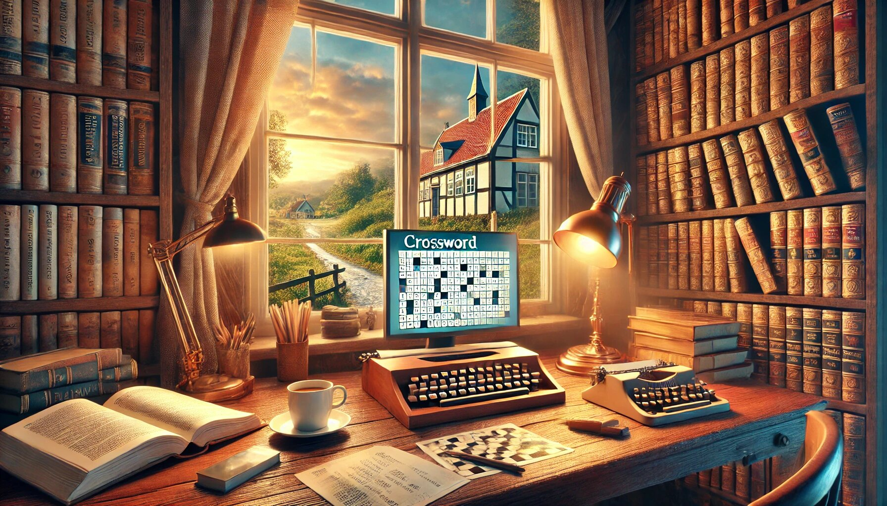

Krydsord er en fantastisk måde at træne hjernen, slappe af og have det sjovt på samme tid. Men lad os være ærlige – nogle gange sidder vi fast på et ord, og det kan være utroligt frustrerende. Her kommer Krydsord Ordbog ind i billedet! Danmarks største og gratis ordbog er din ultimative redning, når du har brug for hurtige løsninger til dine krydsord. Den er brugervenlig, opdateret dagligt, og klar til at hjælpe dig med alle dine opgaver.
Krydsord Ordbog er ikke bare en almindelig ordbog – den er Danmarks største! Uanset om du leder efter et sjældent ord, en forkortelse eller en synonym, har denne ordbog det hele. Med et enormt ordforråd er du garanteret at finde det ord, du mangler, uanset hvor svært krydsordet er. Det er som at have en personlig krydsordsekspert lige i lommen!
En af de bedste ting ved Krydsord Ordbog er, at den er helt gratis. Du behøver ikke at betale for abonnementer eller skjulte gebyrer. Alt du skal gøre er at besøge hjemmesiden eller appen, og du er klar til at starte. Det er en fantastisk ressource for alle, der elsker krydsord – uanset om du er en nybegynder eller en erfaren krydsordsmester.
Ingen vil bruge tid på at lære at navigere i en kompliceret ordbog. Krydsord Ordbog er designet med brugeren i tankerne. Dens enkle og intuitive grænseflade gør det nemt at søge efter ord, uanset om du kender hele ordet eller kun et par bogstaver. Du kan filtrere efter ordlængde, start- eller slutbogstaver, og endda finde synonymer. Det er så nemt, at selv din bedstemor kan bruge det!
Sproget udvikler sig hele tiden, og nye ord dukker op hver dag. Krydsord Ordbog sikrer, at du altid har adgang til de nyeste ord og udtryk. Den opdateres dagligt, så du aldrig går glip af de seneste tendenser. Uanset om det er et moderne slangudtryk eller et nyt fagterm, er du dækket.
Når du sidder fast i et krydsord, er tid afgørende. Krydsord Ordbog leverer lynhurtige resultater, så du ikke behøver at vente i minutter for at få hjælp. Med bare et par klik kan du finde det ord, du mangler, og komme videre i din krydsordsudfordring. Det er som at have en superhelt til krydsord – hurtig, pålidelig og altid klar til at redde dagen!
Uanset om du arbejder på et simpelt krydsord fra avisen eller et komplekst krydsord fra en specialiseret bog, er Krydsord Ordbog den perfekte løsning. Den dækker alt fra almindelige ord til mere niche-begreber, så du altid har de rigtige værktøjer til at løse enhver opgave.
Krydsord Ordbog er ikke kun en hjælpemiddel – det er også en fantastisk måde at lære nye ord og udvide din viden. Hver gang du bruger ordbogen, støder du på nye ord og betydninger, der kan berige dit sprog og forbedre dine krydsordsevner. Det er som at have en personlig sproglærer, der altid er klar til at hjælpe.
Lad os ikke glemme det sjove element! Krydsord Ordbog gør det ikke kun nemt at løse krydsord – det gør det også mere underholdende. Med dens hurtige og præcise resultater kan du koncentrere dig om det sjove ved at løse krydsord i stedet for at blive frustreret over manglende ord. Plus, det er altid en fornøjelse at lære nye ord og imponere dine venner med din voksende viden.
Krydsord Ordbog er ikke kun begrænset til din computer. Den er tilgængelig på flere platforme, inklusive smartphones og tablets. Det betyder, at du kan få adgang til den, uanset hvor du er – om du er på farten, i toget eller bare slapper af derhjemme. Det er krydsordshjælp lige ved hånden, når du har brug for det mest.
Ved at bruge Krydsord Ordbog støtter du også dansk sprog og kultur. Denne ressource er dedikeret til at bevare og fremme dansk sprog, hvilket er især vigtigt i en tid, hvor engelsk ofte dominerer. Det er en måde at fejre dansk sprog på, mens du har det sjovt med krydsord.
Nu hvor vi har dækket alle de fantastiske fordele ved Krydsord Ordbog, lad os se på, hvordan du kan bruge den mest effektivt:
Lad os ikke glemme det humoristiske aspekt af krydsord. Nogle gange kan de mest frustrerende øjeblikke også være de mest morsomme. Forestil dig, at du sidder og stirrer på et krydsord, og det eneste, der falder dig ind, er "banan" – selvom det slet ikke passer. Med Krydsord Ordbog kan du grine af dig selv, finde det rigtige ord og komme videre. Det er som at have en krydsords-kammerat, der altid er klar med en vittighed og en løsning.
krydsord Ordbog er uden tvivl en game-changer for enhver, der elsker krydsord. Med dens enorme ordforråd, brugervenlige design, daglige opdateringer og hurtige løsninger er den den ultimative ressource til at løse krydsord. Den er gratis, tilgængelig for alle og understøtter dansk sprog og kultur. Uanset om du er en nybegynder eller en erfaren krydsordsentusiast, vil Krydsord Ordbog gøre din oplevelse mere underholdende, engagerende og succesfuld.
Pro Tip: Del din oplevelse med Krydsord Ordbog med dine venner og familie. Det er en fantastisk måde at dele glæden ved krydsord og hjælpe andre med at finde hurtige løsninger. Og hvem ved – måske bliver du den næste krydsordsmester i din omgangskreds! 😊